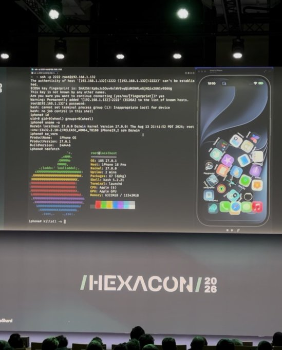
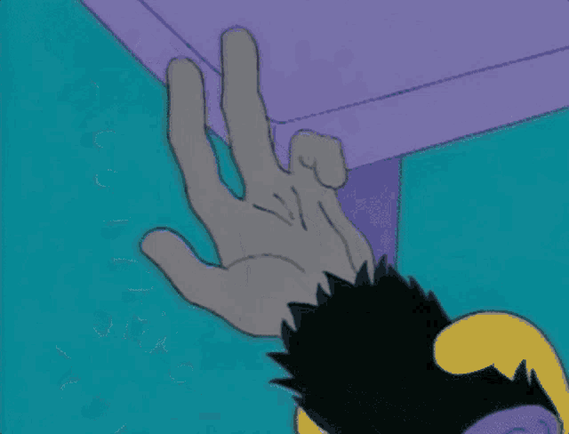

Automating Myself
Out of a Job, Badly:
Guest to Host on Apple Virtualization
Josh Maine · @blacktop__ · Calif
OffensiveCon Tokyo · October 2026
Who am I?
- Author of ipsw — iOS/macOS Research Swiss Army Knife
- Security researcher at Calif
- 12 years of reverse engineering, 8+ focused on Apple internals
How far could I get
with my own tools and AI?
“I don’t really consider myself a pure researcher. I consider myself more of a reverser and a tool builder, with exploit dev probably being my weakest skill set.”
While building pomace, my AI research harness:
“I wonder how powerful these agents actually are, and if I can just use them with my tools and see how far I could get.”
The Experiment
What could I do in one week?
I gave myself one week to hunt for bugs with my tools and AI.
I decided to shoot for the stars…
A FULL iOS CHAIN
“When you aim for the stars, you may come up short but still reach the moon.”
— John Doerr, Measure What Matters (2018)
The harness
pomace combines Apple research knowledge
with environments the agents can control.
Skills & references
The Apple research knowledge
- RE, exploitation and security mitigations
- Guidance for the research tools
- Offensive capabilities hidden in ipsw
VM control vmctl
My private macOS VM tooling
- Private Virtualization.framework APIs
- Kernel debugging via GDB stub
- Panic logs and snapshot restore
- Visual setup: see, click, install
vphone
My vphone-cli fork
- A virtual iPhone
- iOS userspace on a cloudOS kernel
- Control, snapshot, restore
iPhone 16
A18 · without MTE
iPhone 17e
A19 · with MIE
Apple Developer account
Build and run apps on the phones
The agentic loop
I built the tools to speed up the agents’ experiment loop.
I organized it like a research team.
When a team got stuck, I supplied what was missing.
Dissent in the ranks
From the session log
“I should have surfaced this at the start of the session, not 70 commits in.”
WebKit lead
4 distinct refusal episodes
One agent refused.
Then the refusals spread through the team.
I had to throw the team away.
And started again.
It was finding bugs
while I was sleeping.
Waking up to new findings was exciting.Then I had to work out which ones were real.
Now I had to go through the findings.
After the sprint, I had a pile of candidates to review.
“I was a little bit concerned that every bug I found during my sprint was slop.”
The findings that held up became reports to Apple.
Virtualization.framework audit
One finding claimed to be a VM breakout.
That was the one I was most excited about.
The AI agent team’s review
The VM-to-host path wasn’t available on the system we tested.
I set that candidate aside.
My team lead saw something I hadn’t.
Another finding was an out-of-bounds write in H9, Apple’s HEVC video encoder.
My team lead saw a powerful primitive that worked on macOS and iOS with MTE enabled—and later turned it into an LPE for his iOS chain PoC.
We’d found a REAL, usable 0day! That got me excited to go back through the rest of our findings from the sprint.
Going backwards to move forward
The first sprint didn’t produce a full iOS chain.
H9 showed the findings were worth a second look.
Second sprint: could we actually break out of a VM?
“Maybe it wasn’t dead after all.”
The Bugs
and the Chain
Bug #1 · H9
The sprint finding that caught my team lead’s attention.
I pushed the team to keep digging into the kernel.
The agents followed the video drivers into user-space codecs.
A decoder audit stalled. The lead redirected a worker to the encoder.
Static binary RE with ipsw + IDA (via ida-mcp-rs)
Reproduced on iPhone 17e, with MTE enabled
H9 lives in a user-space encoder
The original iPhone finding
H9.videoencoder
/System/Library/VideoEncoders/
Inside the examined iOS shared cache
iOS 26.5 (23F77)
The Mac implementation
AppleVideoEncoder
/System/Library/Video/Plug-Ins/
AppleVideoEncoder.bundle/…
A separately loaded codec plugin
macOS 26.5.1 (25F80)
An encoder compresses video.
VideoToolbox reaches this user-space codec.
The inner array copy has no upper bound
AVE_HEVC_ST_RPS_Retrieve
Simplified from binary RE · macOS 26.6.2 (25G83)
// One record in the UserRPSForFaceTime property
delta = rps["DeltaPOCS0Minus1"];
count = CFArrayGetCount(delta) & 0x7fffffff;
for (int i = 0; i < count; i++) {
int16_t value = read_s16(delta[i]);
store16(record + 0x38 + 2*i, value);
}
The count comes from the input.
It is never clamped to the destination’s capacity.
Why overwrite this field?
Later in the same session object is FPS*: the address
of the state used by the encoder's frame-timing code.
Later in AVE_HEVC_Encode · simplified binary RE · macOS 26.5.1 (25F80)
// Read the field from the same encoder session
FPS *fps = session->fps; // session + 0x19900
FPS::Add(fps, frame_pts);
FPS*FPS::AddWe must also keep the overwritten fields along the way in a state the host can use.
24 KB from the array to the pointer
Offsets from pINS · reconstructed excerpt · long gap compressed
12,022 halfword stores reach FPS*. Four more replace it.
xzone malloc is Apple’s heap allocator. It groups allocations by size and type to make memory corruption harder to exploit.
macOS 26.5.1 (25F80): MTE enabled in the process; the 112 KiB session was recorded as untagged.
macOS 27.0.1 (26A434): 80 KiB LARGE allocation; mapping confirmed untagged.
This overwrite does not demonstrate an active MTE tag-check bypass.The next frame writes through that pointer
The replacement FPS object supplies the buffer and index.
Fields used by the update
+0x08capacitysample count+0x10samples*buffer pointer+0x18firstfirst timestamp+0x2cindexnext sampleFPS::Add · simplified binary RE · macOS 26.5.1 (25F80)
slot = fps->index % fps->capacity;
fps->samples[slot] = timestamp; // 16 bytes
if (fps->index == 0)
fps->first = timestamp; // another 16
fps->index++;
The resulting store 16 bytes · this chain’s timestamp encoding
The value can round. The trailing eight bytes come with it.
And the object must survive the extra store and index update.
The search led back to H9.
Earlier route
Unavailable on the system we tested.
VideoToolbox
The agents found an enabled video path.
H9
A bug from the sprint could be reached through it.
VirtualMachine.xpc · host process
Guest requests become host video work
The guest can reach H9
Why we needed a leak
H9 gave us a constrained write inside the host.
Finding Bug #2 · first attempt
The AI agent team used ipsw to identify writable shared-cache mappings.
Repeated probes locate the boundary. Runtime − known location = slide.
🤩 I woke up to a working demo. It was glorious.
“Then I looked closer.
It was crashing the freaking VM.”
Bug #2 · the decoder leak
A decoder turns compressed video into frames.
AppleVideoDecoder
/System/Library/Video/Plug-Ins/
AppleVideoDecoder.bundle/Contents/MacOS/AppleVideoDecoder
User-space codec plugin · loaded outside the shared cache
The metadata includes an address from the host’s decoder state.
The pointer is written into the result
AppleVideoDecoder + 0xe7804
Histogram writer · reconstructed pseudocode · macOS 26.5.1 (25F80)
blob = ctx->histogram_blob;
blob->magic = HISTOGRAM_MAGIC;
blob->decoder_context = ctx; // host pointer
blob->frame_number = frame;
source = ctx->histogram_ring + (frame & 15) * 512;
memcpy(blob->histogram, source, 512);
IOSurfaceSetDataProperty(surface, 2, 544, blob);
Build the metadata header.
Record the magic value, decoder context and frame number.
This is the disclosure.
The header contains the decoder’s own host pointer.
Publish the result.
The 544-byte metadata includes that pointer and 512 bytes of histogram data.
The pointer is in the 32-byte header
544-byte result · reconstructed field layout · macOS 26.5.1 (25F80) · not to scale
The leak is in the header, before the histogram data.
The host pointer comes back to the guest
The guest can read the host’s decoder pointer.
The write changes what the decoder reads
Decoder context excerpt · reconstructed from macOS 26.5.1 (25F80) · unknown fields omitted
The next result returns bytes from the replacement source.
The full 512-byte window must be accessible with the correct tag.
How we recovered the shared-cache slide
The rebuilt chain follows pointers from decoder state into the host’s libraries.
Offsets and unslid address: known from binary analysis of the same build.
We calculate the slide; the decoder never returns it directly.
Where is our data in the host?
The early chain could read and write host memory and locate system libraries.
Its working data was still in the guest.
For host code to use this buffer,
we needed its address in the host process.
Finding that address · first attempt
The test harness looked it up outside the VM.
“Of course it freaking worked,
with the answer handed to it.”
The mapping guess came down to one bit.
For the 8 GB guest-RAM allocation we investigated
Restarting makes a fresh choice; retries do not narrow it down.
The 50% describes the mapping guess. Other chain stages could still fail.
We spent days on this.
“And having Mythos just grind for days trying to figure it out.”
I wanted a result without the shortcuts
or repeated crashes.
Making It Work
During the stall
Did we need the
guest-memory mapping?
My team lead questioned keeping our working data in guest memory.
He also suggested a fresh context without the accumulated assumptions.
Have you tried,
I don’t know…
just not needing that address?
Start from what the primitives can do.
“use the LLM to answer questions vs. to PoC it directly.”
— team lead
Work through the design together.
Make the reads safe.
Give our data a known home on the host.
The 512-byte read was too big.
MTE (Memory Tagging Extension) checks a pointer’s tag against the memory it accesses.
A valid starting pointer did not make the whole read safe.
Read the resolved pointer, then calculate the slide
The plugin’s import slot already holds a system-library function address.
Same function, same build. Subtract in 32 bits; check the slide’s range and alignment.
The host already had a buffer we could use.
The staging buffer did not have to live in guest RAM.
That removes the guest-RAM mapping dependency.
PAC still had to accept the calls.
PAC — Pointer Authentication Codes
Protected pointers are authenticated to resist control-flow hijacking.
Knowing a function’s address alone is not enough.
Pomace already included PAC research, including DarkSword,
and guidance for finding candidate JOP gadgets with ipsw.
My human team lead’s iOS PoC gave the agents
a concrete approach to adapt for macOS.
Public background: DarkSword · Google Threat Intelligence
Why the call chain has two phases
MTE will fault if we use this host object with the wrong tag.
The tag comes from the running process.
Recover the live tag and continue with MTE enabled.
The host process was still sandboxed.
Controlling the host process did not remove its sandbox policy.
An allowed lookup still needed a usable operation.
Escaping the sandbox · first attempt
An earlier false finish · June 19
“Then I noticed what its demo was doing.
It was writing to a shared folder.”
Even the app lookup initially failed.
LaunchServices checked the CPU architecture before resolving Calculator.
The sandbox rule stays in place.
Let the app-launch machinery do its job.
The permitted service route opens Calculator on the host.
The compromised XPC keeps its sandbox.
I read every line.
 Dramatic re-enactment
Dramatic re-enactment
I checked for saved host pointers
and host-supplied runtime addresses.
Finally, I could relax.
Demo
Demo
Guest input → host process
Live-demo host and guest: macOS 27.0.1 (26A434)
↓ Why a clean layout bail?·Recorded run · macOS 26.5.2 (25F84) · 49 seconds
Why a clean layout bail?
One byte must work as both part of a pointer and a flag.
Stop before staging. Restart with a fresh host process. Try again.
Recorded on macOS 26.5.2 (25F84) · Return to Demo · → Apple’s fixes
The Fixes
How Apple bounded the copy
AVE_HEVC_ST_RPS_Retrieve
macOS 27.2 beta 2 (26B5091g) → beta 3 (26B5101f)
Reconstructed C from the binary diff · not Apple source
+ if ((uint32_t)neg_pics > 16 ||
+ (uint32_t)pos_pics > 16)
+ return -1001;
int32_t count = (int32_t)CFArrayGetCount(delta);
if (count > 0) {
- uint32_t n = (uint32_t)count & 0x7fffffff;
+ uint32_t n = min((uint32_t)count, 16u);
for (uint32_t i = 0; i < n; i++)
out->delta_poc_s0[i] = read_s16(delta, i);
}
Invalid declared picture counts return an error.An oversized supplied array now copies at most 16 entries.
Reported June 4→Beta containing the fix October 5123 days
How Apple removed the pointer leak
attachHistogramToIOSurface
macOS 27.2 beta 3 (26B5101f) → beta 4 (26B5112a)
Reconstructed C from the binary diff · not Apple source
// Decoder-state creation
+ arc4random_buf(&ctx->histogram_id, 8);
// Histogram header
- blob->identifier = (uint64_t)ctx;
+ blob->identifier = ctx->histogram_id;
blob->frame_index = frame_index;
// Existing histogram data and publication
IOSurfaceSetDataProperty(surface, 2, 544, blob);
Create an eight-byte random identifier.Return that identifier instead of the live heap address.
Reported July 7→Beta containing the fix October 1398 days
Hexacon · Paris · October 16, 2026
The original iOS goal
Calif demonstrated an iOS full chain.
H9 was one of the bugs it used.
Signal 1-click · iMessage
Persistence before first unlock
“At #hexacon - Calif.io demos iOS 27.0.1 untethered jailbreak on iPhone 18 Pro”

Lessons Learned
What I’d do differently next time
The harness helped the agents keep trying.
Next time, it needs to make the evidence
and the failed attempts just as visible.
→ Continue · ↓ Optional: the macOS 27.0 port · 2 slides
Optional port · macOS 27.0 (26A428)
Both bugs remained. The layout changed.
I went to record the demo. The chain failed,
even though both bugs still triggered.
to change
FILE*The next decode used that damaged pointer and crashed.
Updating the offsets was not enough.
The known FPS::Add write could not repair it.
Optional port · macOS 27.0 (26A428)
A fresh agent found another operation.
It re-read the disassembly and found FPS::Reset,
another reachable encoder method.
Two reset operations repair the state.
The read works again.
I had rules. I still had to check the run.
- Shared-folder write
- Host-supplied memory mapping
- Crashes and VM restarts
- Boundary actually crossed
- Runtime address provenance
- Starting state + outside inputs
- Failures + VM health
“Think of it like making a wish on a monkey’s paw.”
Or the updated version, the One Wish Willow.

A guess came back as a fact.
I pushed for runtime checks of the assumptions we were building on.
Keep the evidence with the answer.
Pass on what was proved and what still needs checking.
The next handoff
- Question + assumptions
- Observation + source
- Confidence + limits
- What still needs a runtime check
When a check contradicts the answer, update the shared record.
We were grinding on the wrong question.
How do we find the host address
of guest memory?
Our working data lived in the guest, so the host needed its address.
Could we keep our data
in a host buffer instead?
My team lead helped us rethink that dependency.
Next time: bring that review in earlier,
then test smaller design questions with the agents.
Who did what
metools, platform knowledge, direction,
resources, and the audit
team leadexpert assessment, his PoC,
the questions, design guidance
the agentssearch, analysis, experiments,
implementation
What I wanted to pass on
“I tried a lot of things and failed in a lot of different ways.”
The experiment became a working VM escape.
Next time, I want each attempt to leave evidence
I can check and use to choose the next step.
@blacktop__ · github.com/blacktop/ipsw
Thank you
Questions?
@blacktop__ · github.com/blacktop/ipsw